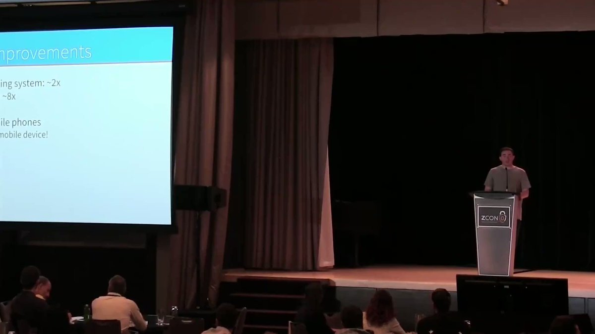

Zero-knowledge Audiovisual Club
Zero-knowledge Audiovisual Club
We work with open-source and decentralized tech communities to document themselves without giving up privacy.
Through workshops, event recording, and practical AV documentation, communities create and maintain their own archives.
People. Stories. Tools.
Recording Station
Zk Av Club Recording Station is a simple setup we drop into events so people can record solid audio and video without bringing gear or a production team.
You bring the conversation. We handle the mics, framing, and levels.
The content belongs to the creators in it. After approval, the original recording is preserved in the public archive.
Read how it works (recording flow, licensing, and consent)

Workshops
Zk Av Club Workshops are sessions where people learn by doing, together.
Bring questions. Bring half-finished ideas — like editing clips with open-source tools or running a privacy-first livestream.

Archive Model
Recordings return to a shared archive, but they need structure to stay useful. Through metadata, context, and storytelling, they become something people can navigate, discover, and build on.

Opportunities
Zk Av Club runs on small networks of people who help recordings survive beyond the event: camera operators, live translation, scribes, editors, workshop facilitators, and livestream technicians.
Join the Club
Bring a question, a lead, or something you're not sure is ready yet.
- Stay in the loop: X, Bluesky, and the calendar
- Run or host a workshop: Start here
- Help after the event: see Opportunities
- Suggest an activation: Drop us a line
- Direct message: X or Bluesky works fine. Tell us what you're trying to do, and we'll point you to the right next step.
Testimonials
What people we've worked with say about the club.
Zk Av Club is a throwback to the grassroots ethos of the early days of the crypto revolution. Uncompromising in their community-first approach to audio/visual education and support, Zk Av Club gives a voice to the individuals behind the camera, in the booth, working before, during and after the event to share the news and progress the world needs to know.
For years, Ryan Taylor and Zk Av Club have provided exceptional live streaming for Bitcoin and cryptocurrency events, ensuring global reach and high-quality broadcasts. Their dedication is unmatched.
Ryan and Zk Av Club are great, not just a streaming and media team but also deep community leadership and advocacy. My favorite is seeing Ryan bring AV training sessions to newly formed local groups with minimal equipment, empowering them to improve their own global media abilities and stay included.
have you ever been to cozy virtual meeting space full of people who don't expect you to know it all? this is what Zk Av Club is. join with zero knowledge about video or any kind of media/arts and start learning bit by bit - its a vibe. you might learn there are so many awesome useful open source free tools you never even knew to look for.
the club is also big on experimenting. each member can use their new knowledge to start creating something they want or join forces with others to collaborate. best part is when you find a chance to be part of some on-location events or workshops with other club members.
More testimonials
On my journey discovering Zcash, I randomly discovered Adjy Leak, and in conjunction, Zk Av Club. Through the club, I experienced not only my first time connecting with many like-minded folks through live streaming, but also a vast archive of knowledge I didn't even know existed! If you like adventure, computer science, and community, I couldn't recommend a better environment to start your journey. dismad · ZecHub
Zk Av Club is a place where you can share and learn just about anything! Zk Av also provides video and audio editing support, some of the best AI image generation prompts you will ever come across, hands-on workshops with new, obscure P2P software - all just a glimpse into what happens over at the club! It has been hugely beneficial to our work over at ZecHub. @zksquirrel · ZecHub
Zk Av Club is a source of inspiration for me and for everyone who comes. Seeing the work they do behind the scenes and then the staging in each event or streaming, is definitely a motivation to learn more about everything audiovisual. As a member of the team I can say that every day is an opportunity to learn, grow and contribute from my knowledge as well. Long live the club! @SoyAuraBrito
The AV Club has been a space for me to connect with technology, open source and content generation geeks like me.
I like being part of the team because there is freedom of creativity, opinion and action. Although we all work for the same purpose (teaching and spreading privacy and free technologies), we can all have our style with freedom.
Roosevelt Gordones · gordonesTV
I worked with Zk AV Club in Berlin to produce my talk for ZConV. They ran the entire virtual event with a lean team, and made it very engaging and interactive. I appreciate their deep knowledge of the privacy space and their contributions to events in the community, and hope to work with them on many projects to come. @therealyingtong
Ryan is a pro. His production work is top shelf as evidenced by his work on Zcons through the years, and his commitment to providing engaging and informative content. With Zk Av Club he continues his dedication and professionalism while also widening the tent to welcome and include new voices from all around the world and across industries. His professionalism, empathy and deep interest in the topics and people he's engaged with shines above all. Josh Swihart · Zodl
Zk Av Club is a remarkable initiative born from the passion of Zcash community members worldwide. It has created an inclusive environment where individuals can learn from one another and explore audiovisual tools aimed at enhancing Zcash awareness. I am continually impressed by the members' unwavering support for each other, regardless of their experience level—whether newcomers or seasoned AV experts. The diversity of backgrounds and languages is celebrated, fostering a rich communal spirit. Danika Delano · Zcash Foundation
Partner Communities
We collaborate with peer communities around the world.
Partners are communities we've recorded with, trained, supported with publishing infrastructure, or otherwise worked alongside.
To reach us, use the links in Join the Club (X, Bluesky, or the calendar).
ZecHub
The community-powered Zcash education hub
Add your community (PR welcome). — create a PR
Additional Reading
And, the archive emerges from practice.
What an archive becomes is defined by how material is created and handled over time.
2026 Feb 27Free & Open-Source Media: Stewarding a Community-Owned Archive
On maintenance, reuse, and what it actually means to create open media.
2025 Sept 26Zk Av Club is not an online community.
What "community" means here, and why we don't try to be a permanent online hangout.
2025 Mar 3Zk Av Club is not a production company.
What we are (and aren't): training, documentation, and support for people doing the work.
2023 Jan 12Original forum thread
The original thread: early context, goals, and a running history.
2015 Jun 16The Art of Sharing
Why we share this way: livestreams, P2P, and the ethics of distribution.
About the founder: Ryan Taylor (aka Adjy Leak)
Support Zk Av Club
If you want more free and open-source media that isn't controlled by big platforms, here's how to back us.
We work across ecosystems (Zcash, Ethereum, Polkadot, Filecoin). No donor tracking.
If you'd like to pitch in, pick a chain you already use and copy an address below.
Most used:
Zcash
shielded preferredu1dexkdd40ulkhthmuxv4tlnrzyxfd7zt2gh27myamg09tzjgurf9mqvgtlfe8vxg7ghjrsucu4ghm5kqc4ngwqd6k35tkf7j84a59m5u6tlyc73x07ckwtdqv475t9q3w58073d9xt55ppw4945jnudghuqjmyf4rh263srrmmvy2kwpyEthereum
gm friendly0x766Af9486D3b266eC97E2fFdC2880Bc44c702Df7Bitcoin
old reliablebc1qdrynrr63c3x8vw7809yjeujg7waq09z9e9m7pvMore options
13bC34oT8iyD4VGT7suPB5ec22dvRoQG5m3GdwZWUFrfg7aaf1b2cupst4qnxyhcnpvizn4pcbb7id7juearbxsrq48Yg7xLxLzH8jnyPRje7ZXbziE9YqXE3zhXYAHt1sHSvGRDGHjDqoDMN6hH2oCvbxTZiaApTXex19i5qGMzb8ZM99ZJE4MMThanks!
Zk Av Club runs because many people contribute time, knowledge, space, and trust.
Special thanks to Zcash Community Grants for supporting Zk Av Club in 2026. Read the proposal and discussion thread.
Thanks also to the event organizers, facilitators, creators, and community members who make the recordings possible.
Zk Av Club is built almost entirely on free and open-source tools and public infrastructure. Thanks to the developers and maintainers who make that possible.